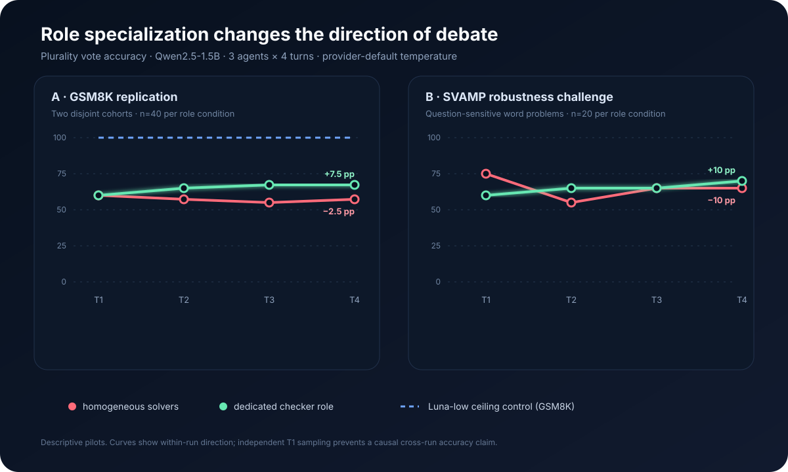
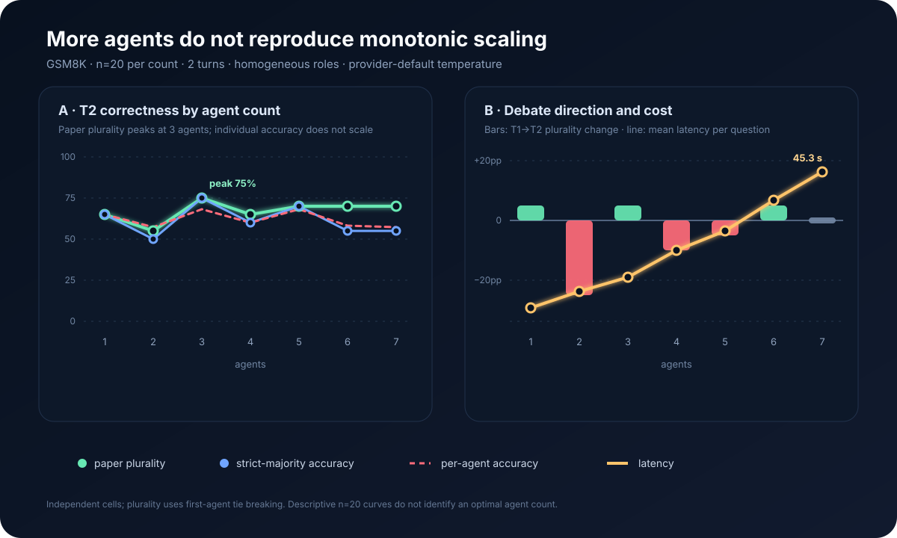
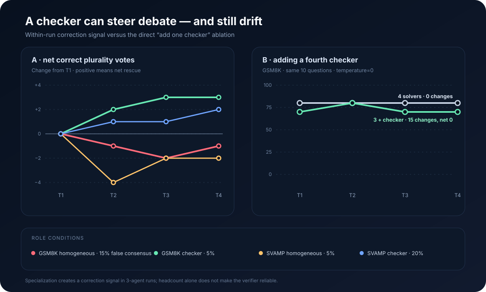

30 秒看懂实验
我们只改变第三个 agent 的职责
同一道数学文字题由 3 个 agent 连续讨论 4 轮，最后按出现最多的答案计分。
同质组3 个 agent 都负责解题
VS
Checker 组2 个解题 + 1 个专职检查
让一个 agent 专门检查答案，能让纠错更有方向；但“有 checker”不等于“答案更可靠”，它也会被其他 agent 带偏。
同一道数学文字题由 3 个 agent 连续讨论 4 轮，最后按出现最多的答案计分。
60% → 57.5% · 讨论后略降
60% → 67.5% · 讨论后上升
60% → 70% · 跨数据集同方向
70% → 70% · 没有净收益
在 GSM8K 与 SVAMP 中，checker 组都从首轮到末轮上升；同质组没有稳定上升。

checker 更像是在改变全组“注意什么、保留什么”，而不是自动成为正确答案的裁判。
固定两轮后，3-agent 达到 75%；5–7 agents 停在 70%，平均延迟从 4.0 秒增至 45.3 秒。

把一个 solver 换成 checker 有提示性收益；直接追加第四个 checker，却没有提高最终准确率。

正确候选从第一轮就存在；失败发生在判断哪个解释可信，而不是没有看到正确解法。
一个复杂但错误的解释，被两个原本答对的 agent 复制。
模型把题目中的 “5 five cookies” 解释为 5×5。解释更长、更像推理，却没有更正确。
最后一轮算对“死亡 39 棵”，却把 39 写成剩余数量。
辩论补充了步骤，但没有稳定验证“这个数字回答的究竟是什么”。
冻结同一批 solver 输出，再让独立 adjudicator 只做一次最终裁决。这样可以把“验证能力”与“被 peers 反向影响”分开测试。